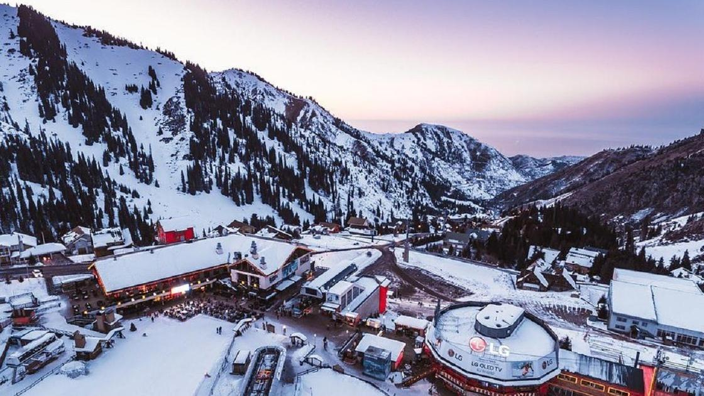
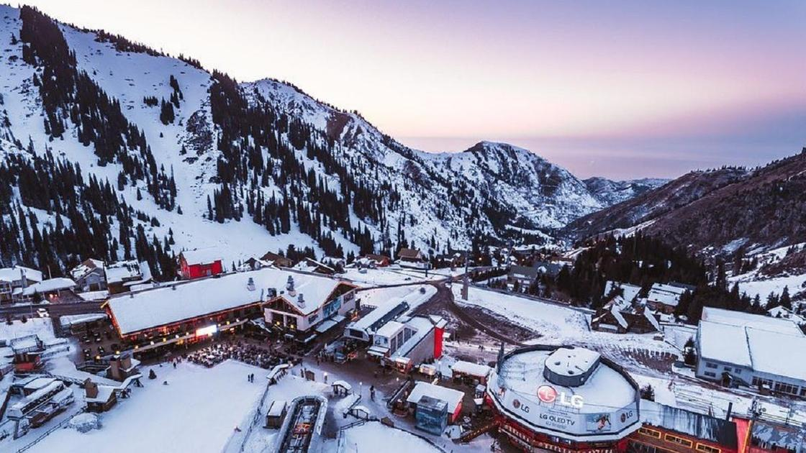
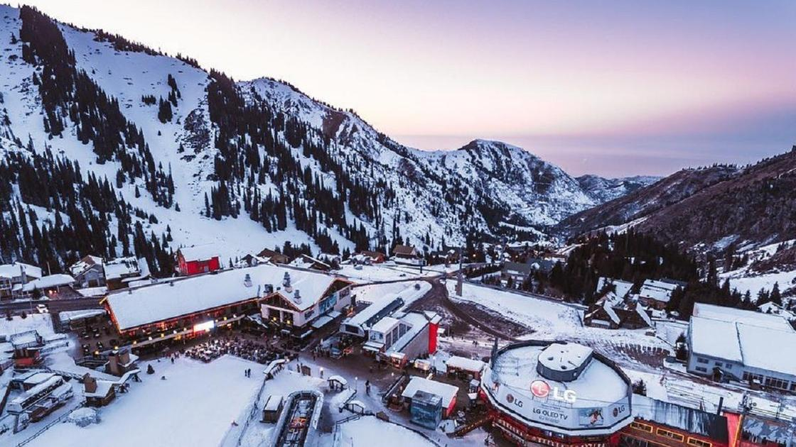

BAITEREK (ASTANA)
The symbol of Astana — a 97-meter tower offering a panoramic view of the city.

 

The symbol of Astana — a 97-meter tower offering a panoramic view of the city.

Immerse yourself in the capital's spirit — from modern icons like Bayterek and the Grand Mosque to cultural and historical sites.


Winter in Kazakhstan offers snowy landscapes, active winter sports, and cozy traditions. Resorts like Shymbulak in Almaty, Ak-Bulak, Tabagan, and Nurtau in Ust-Kamenogorsk attract skiers and snowboarders. Medeu skating rink, at 1691m above sea level, lets you skate among snow-covered mountains. Adventurers can enjoy ice fishing on Lake Balkhash or the Caspian Sea, and snowmobile safaris in the steppe. You can also ride dog or reindeer sleds and enjoy nature. After activities, relax in the hot springs of Chundzha or Rakhmanov Keys. Winter is also festive season: Kazakhstan celebrates Nauryz Kyshy, Christmas, and New Year with lights, fairs, and mountain ice festivals.